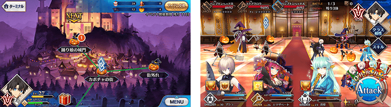
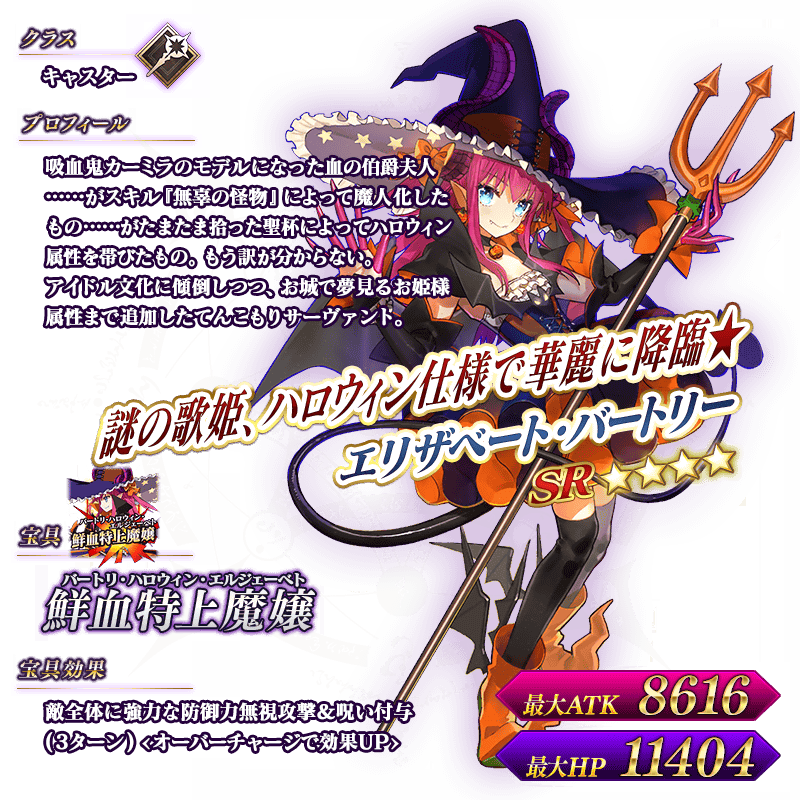
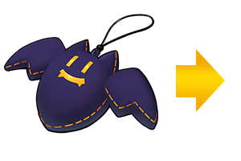
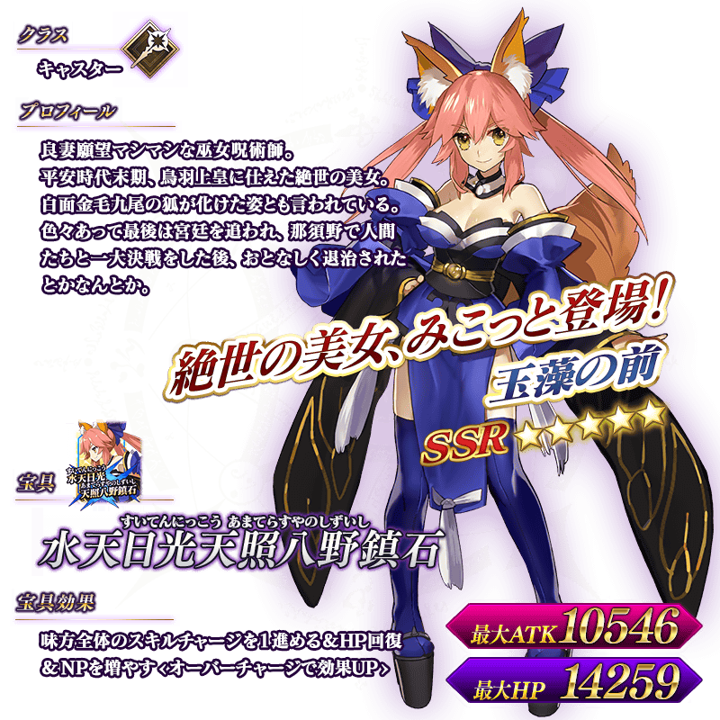

◆活動舉辦期間◆
2015年10月21日（三）17：00～11月5日（四）12：59
◆活動概要概要◆
贈送由奈須きのこ&東出佑一郎的完全原創故事，舉辦期間限定萬聖節活動！
突然出現在南瓜城的熱鬧Servant們。會展開怎樣的萬聖節派對？
通過本活動的主線任務到最後的話，必定能獲得活動限定★4(SR)Servant「伊麗莎白・巴托里[萬聖節]」！
突然出現在南瓜城的熱鬧Servant們。會展開怎樣的萬聖節派對？
通過本活動的主線任務到最後的話，必定能獲得活動限定★4(SR)Servant「伊麗莎白・巴托里[萬聖節]」！
並且！除了主線任務外，也有能重複過關的Free任務11點和19點追加的派對任務之外，再加上每天突然出現的游擊任務登場！仔細看地圖享受游擊任務吧！
參加各種任務，獲得更多活動專用道具吧！
參加各種任務，獲得更多活動專用道具吧！
◆活動參加方法◆
只有通過「第一特異點 邪龍百年戰爭 奧爾良」的Master才能參加。。
由於「主線任務AP消費1/2」宣傳活動實施中，未通過的Master無論如何請藉此機會推進主線任務來參加活動。
由於「主線任務AP消費1/2」宣傳活動實施中，未通過的Master無論如何請藉此機會推進主線任務來參加活動。
◆超值攻略方法◆
裝備活動限定概念禮裝、期間限定概念禮裝能增加獲得道具。
各道具實用的獲得方法，請參考下列！
※請注意各任務的道具掉落率並非100%。
各道具實用的獲得方法，請參考下列！
※請注意各任務的道具掉落率並非100%。

從各概念禮裝獲得的增加數皆不相同。詳情請見下列所述。



◆靈基再臨◆
使用活動期間中的道具交換以外無法入手的「ティンクルキャンディー」，重複4次靈基再臨的話，卡面會有所變化！

※伊麗莎白・巴托里[萬聖節]不會隨靈基再臨使戰鬥角色的外觀變化。
◆活動限定報酬◆
★★★★★SSR
技能
メイド・イン・ハロウィン
ATK 0（最大：0） HP 750（最大：3000）技能
自身的HP回復量提升60%＋惡作劇蝙蝠的掉落獲得數增加2個【『歌詠南瓜城的冒險』活動期間限定】

★★★★★SSR
技能
ハロウィン・プリンセス
ATK 250（最大：1000） HP 375（最大：1500）技能
自身的寶具威力提升15％＆NP以30％累積狀態開始戰鬥＋甜蜜蠟燭的掉落獲得數增加2個【『歌詠南瓜城的冒險』活動期間限定】

★★★R
技能
トリック・オア・トリート
ATK 100（最大：500） HP 150（最大：750）技能
自身的弱體成功率提升10%＋迷你蛋糕的掉落獲得數增加3個【『歌詠南瓜城的冒險』活動期間限定】


◆交換方法◆
交換期間：11/11（三）12:59為止
※交換期間結束後，南瓜燈籠、惡作劇蝙蝠、甜蜜蠟燭、迷你蛋糕會消失。
※交換期間結束後，南瓜燈籠、惡作劇蝙蝠、甜蜜蠟燭、迷你蛋糕會消失。
從商店內的「活動道具交換」，能用活動中收集的交換道具交換以下的道具。
「★4（SR）伊麗莎白・巴托里[萬聖節]」必須通過活動內的主要任務到最後才能交換。
「★4（SR）伊麗莎白・巴托里[萬聖節]」必須通過活動內的主要任務到最後才能交換。
◆南瓜燈籠可以交換的道具◆
【活動限定Servant】
★4（SR）
伊麗莎白・巴托里[萬聖節]
【活動限定概念禮裝】
★5（SSR）
「メイド・イン・ハロウィン」
【靈基再臨素材】
伝承結晶
バーサーカーモニュメント
バーサーカーピース
★4（SR）
伊麗莎白・巴托里[萬聖節]
【活動限定概念禮裝】
★5（SSR）
「メイド・イン・ハロウィン」
【靈基再臨素材】
伝承結晶
バーサーカーモニュメント
バーサーカーピース
◆惡作劇蝙蝠可以交換的道具◆

【活動限定Servant】
★4（SR）
伊麗莎白・巴托里[萬聖節]
【活動限定概念禮裝】
★5（SSR）
「ハロウィン・プリンセス」
【靈基再臨素材】
ティンクルキャンディー
セイバーモニュメント
セイバーピース
★4（SR）
伊麗莎白・巴托里[萬聖節]
【活動限定概念禮裝】
★5（SSR）
「ハロウィン・プリンセス」
【靈基再臨素材】
ティンクルキャンディー
セイバーモニュメント
セイバーピース
◆甜蜜蠟燭可以交換的道具◆
【活動限定Servant】
★4（SR）
伊麗莎白・巴托里[萬聖節]
【活動限定概念禮裝】
★3（R）
「トリック・オア・トリート」
【靈基再臨素材】
竜の逆鱗
ランサーモニュメント
ランサーピース
★4（SR）
伊麗莎白・巴托里[萬聖節]
【活動限定概念禮裝】
★3（R）
「トリック・オア・トリート」
【靈基再臨素材】
竜の逆鱗
ランサーモニュメント
ランサーピース
◆迷你蛋糕可以交換的道具◆
【活動限定Servant】
★4（SR）
伊麗莎白・巴托里[萬聖節]
【靈基再臨素材】
ゴーストランタン
竜の牙
凶骨
ホムンクルスベビー
キャスターモニュメント
キャスターピース
【經驗值卡片】
叡智の猛火ALL★4（SR）
叡智の大火ALL★3（R）
★4（SR）
伊麗莎白・巴托里[萬聖節]
【靈基再臨素材】
ゴーストランタン
竜の牙
凶骨
ホムンクルスベビー
キャスターモニュメント
キャスターピース
【經驗值卡片】
叡智の猛火ALL★4（SR）
叡智の大火ALL★3（R）


◆萬聖節Pick Up召喚期間◆
期間：2015年10月21日(三) 17:00 ～ 11月4日(三) 12:59
以期間限定舉辦萬聖節Pick Up召喚！
ま還有，在第四章活躍的Servant「「★5(SSR)玉藻前」」先行新登場！
※玉藻前，萬聖節Pick Up召喚期間結束後，將於四章配信時追加到故事召喚。
並且，裝備期間限定概念禮裝「ハロウィン・プチデビル」、「ハロウィン・アレンジメント」、「ジャック・オー・ランタン」的話，會提高在活動獲得的道具數。
在Pick Up期間中，新登場Servant、期間限定概念禮裝、Pick Up4位Servant出現機率提高！
10次召喚★4(SR)以上1枚確定和★3(R)以上的Servant1位確定！
※★4(SR)以上確定包括Servant和概念禮裝。
以期間限定舉辦萬聖節Pick Up召喚！
ま還有，在第四章活躍的Servant「「★5(SSR)玉藻前」」先行新登場！
※玉藻前，萬聖節Pick Up召喚期間結束後，將於四章配信時追加到故事召喚。
並且，裝備期間限定概念禮裝「ハロウィン・プチデビル」、「ハロウィン・アレンジメント」、「ジャック・オー・ランタン」的話，會提高在活動獲得的道具數。
在Pick Up期間中，新登場Servant、期間限定概念禮裝、Pick Up4位Servant出現機率提高！
10次召喚★4(SR)以上1枚確定和★3(R)以上的Servant1位確定！
※★4(SR)以上確定包括Servant和概念禮裝。
◆新登場Servant◆
★★★★★SSR Caster
玉藻の前
MAX ATK 10546 MAX HP 14259寶具 水天日光天照八野鎮石（すいてんにっこう あまてらすやのしずいし）
◆期間限定概念礼装◆
★★★★★SSR
技能
ハロウィン・プチデビル
ATK 500（最大：2000） HP 0（最大：0）技能
自身的NP獲得量提升20％＆NP以50％累積狀態開始戰鬥＋南瓜燈籠的掉落獲得數增加1個【『歌詠南瓜城的冒險』活動期間限定】

★★★★SR
技能
ハロウィン・アレンジメント
ATK 0（最大：0） HP 600（最大：2250）技能
賦予自身目標集中狀態(1回合)＆防禦力提升60%(1回合)＋惡作劇蝙蝠的掉落獲得數增加1個【『歌詠南瓜城的冒險』活動期間限定】

★★★R
技能
ジャック・オー・ランタン
ATK 200（最大：1000） HP 0（最大：0）技能
賦予自身傷害加成100狀態＋甜蜜蠟燭的掉落獲得數增加1個【『歌詠南瓜城的冒險』活動期間限定】

◆Pick Up Servant◆
★★★★SR Berserker
玉藻貓
MAX ATK 9026 MAX HP 11458寶具 燦々日光午睡宮酒池肉林（さんさんにっこうひるやすみしゅちにくりん）
★★★★SR Assassin
卡蜜拉
MAX ATK 9408 MAX HP 10473寶具 幻想の鉄処女（ファントム・メイデン）
★★★R Berserker
大流士三世
MAX ATK 7608 MAX HP 8763寶具 不死の一万騎兵（アタナトイ・テン・サウザント）
★★★R Caster
梅菲斯托費勒斯
MAX ATK 6839 MAX HP 9216寶具 微睡む爆弾（チクタク・ボム）

